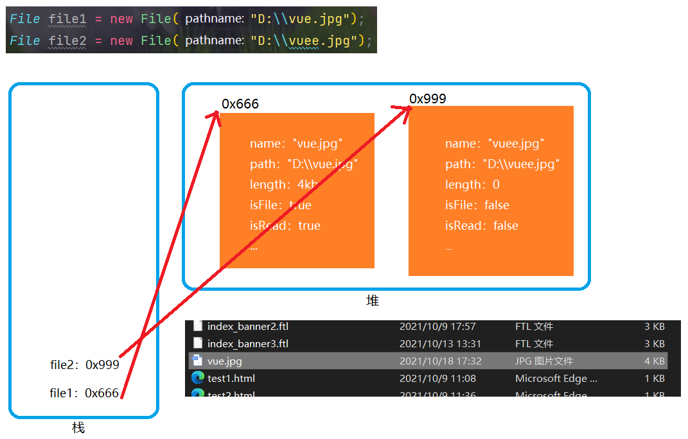
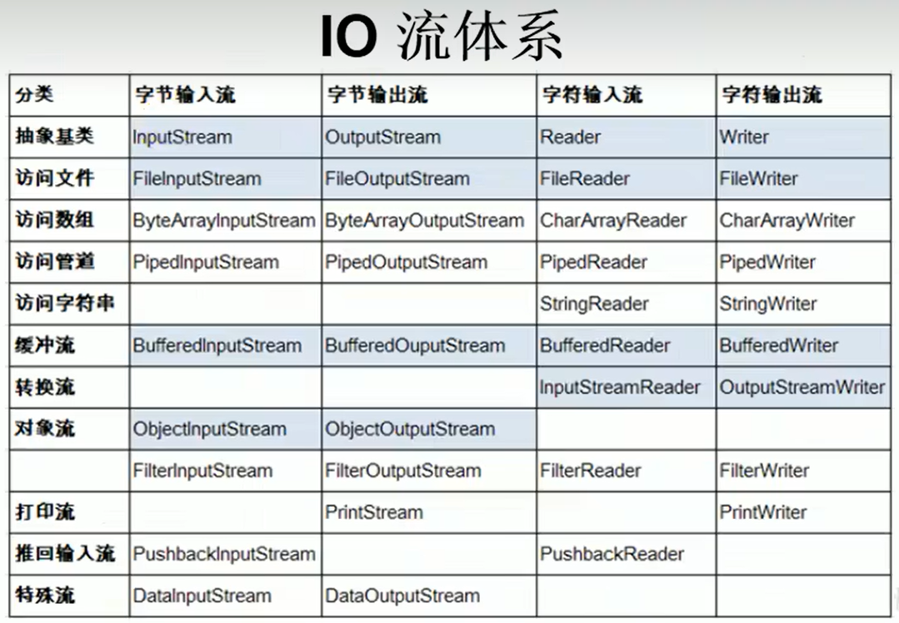

D17M9(集合)
Java集合可分为Collection和Map两种体系
集合结构体系：
Collection接口：单列数据，定义了存取一组对象的方法的集合
|----List接口：元素有序，可重复的集合
|----实现类：ArrayList、LinkedList、Vector、...
|----Set接口：元素无序，不可重复的集合
|----实现类：HashSet、LinkedHashSet、TreeSet、...
...
Map接口：双列集合，保存具有映射关系“key-value”的集合
|----HashMap、LinkedHashMap、TreeMap、Hashtable、Properties
Collection的常用方法
| boolean add(E e) | 将指定元素添加到集合 |
|---|---|
| boolean addAll(Collection<? extends E> c) | 将指定集合中的元素添加到集合 |
| void clear() | 清除该集合中的元素 |
| boolean contains(Object o) | 如果此集合包含指定的值，则返回true |
| boolean containsAll(Collection<?> c) | 如果此集合包含指定集合中的所有值，则返回true |
| boolean remove(Object o) | 移除集合中指定元素，通过equals方法查找要删除的元素 |
| boolean removeAll(Collection<?> c) | 从调用者中移除指定集合中的元素 |
| boolean retainAll(Collection<?> c) | 调用该方法后，调用者中只存在与c集合的交集 |
| Object[] toArray() | 集合转换为数组 |
| Iterator
|
返回此集合中的迭代器 |
注：数组 ---> 集合：调用Arrays.asList(T... a)
集合元素的遍历(使用Iterator接口)
Iterator对象称为迭代器，主要用于遍历Collection集合中的元素
集合对象每次调用iterator接口都会得到一个全新的迭代器对象，默认游标都在集合的第一个元素
集合还可以用增强for循环遍历，增强for循环底层也是使用的迭代器
public class Demo {
public static void main(String[] args) {
Collection list = new ArrayList();
list.add("a");
list.add("b");
list.add("c");
list.add("d");
Iterator iterator = list.iterator();
while(iterator.hasNext())
System.out.println(iterator.next());
iterator.remove();//移除当前指向元素
}
}
List接口常用实现类的对比
面试题 ：比较ArrayList、LinkedList、Vector
相同点：三者都实现类List接口，存储数据的特点相同：存储有序，可重复的数据
不同点：
- ArrayList：作为List接口的主要实现类(since jdk1.2)；线程不安全；效率高；底层使用Object[]存储
- LinkedList：底层使用双向链表存储；
- Vector：作为List接口的古老实现类(since jdk1.0)；线程安全；效率低 ；底层使用Object[]存储
- 在需要频繁查找数据时使用ArrayList；需要频繁插入，删除数据时使用LinkedList
ArrayList源码分析
JDK7的环境下
public class Demo {
public static void main(String[] args) {
//底层创建了长度为10的Object[]数组elementData
ArrayList arrayList = new ArrayList();
//elementData[0] = new Integer(123);
arrayList.add(123);
//如果此次添加的数据导致底层elementData数组容量不够，则扩容
//默认情况下，扩容为原来的1.5倍，同时需要将原有数组中的数据复制到新的数组中
arrayList.add(234);
//结论：建议使用带参构造器，减少扩容
}
}
JDK8中的变化
public class Demo {
public static void main(String[] args) {
//底层elementData初始化为{}，并没有创建长度为10的数组
ArrayList arrayList = new ArrayList();
//第一次调用add()时，底层才创建了长度为10的数组，并将数组添加到elementData
arrayList.add(123);
//后续的添加和扩容操作与JDK7无异
}
}
接上图的解释：modCount这个成员变量记录着集合的修改次数，也就每次add或者remove它的值都会加1；这个变量是迭代器在使用；在迭代器遍历时，如果对应的集合进行了add，remove等操作，modCount的值会增加，与迭代器中的值对应不上
此时会抛出ConcurrentModificationException异常
//这也不是一定出现异常，试试多运行几次，让thread2先手抢到CPU的执行权
public class Demo {
public static void main(String[] args) {
Thread thread1 = new Thread(new ThreadDemo(){
@Override
public void run() {
list.add("345");
list.add("456");
System.out.println(Thread.currentThread().getName());
}
});
Thread thread2 = new Thread(new ThreadDemo() {
@Override
public void run() {
Iterator<String> iterator = list.iterator();
while(iterator.hasNext()){
System.out.println(iterator.next());
try {
Thread.sleep(1000);
} catch (InterruptedException e) {
e.printStackTrace();
}
System.out.println(Thread.currentThread().getName());
}
}
});
thread1.setName("赋值线程");
thread2.setName("迭代线程");
thread2.start();
thread1.start();
}
}
abstract class ThreadDemo implements Runnable{
public static ArrayList<String> list = new ArrayList<>(12);
static {
list.add("123");
list.add("234");
}
}
小结：JDK7中的ArrayList的对象创建类似于单例的饿汉式，而JDK8中的ArrayList的对象的创建类似于单例的懒汉式，延迟了数组的创建，节省内存
LinkedList源码分析
public class Demo {
public static void main(String[] args) {
//内部声明了Node类型的first和last属性，默认值为null
LinkedList list = new LinkedList();
//将123封装到Node中，创建了Node对象
list.add(123);
}
}
其中：Node定义为(体现了LinkedList的双向链表的说法)：
这是一个内部类
private static class Node<E> {
E item;
Node<E> next;
Node<E> prev;
Node(Node<E> prev, E element, Node<E> next) {
this.item = element;
this.next = next;
this.prev = prev;
}
}
List的常用方法
| void add(int index, Object ele) | 在指定索引处插入ele元素 |
|---|---|
| boolean addAll(int index, Collection eles) | 在指定索引处插入eles集合中的所有元素 |
| Object get(int index) | 得到指定索引处元素的值 |
| int indexOf(Object obj) | 返回obj在集合中首次出现的位置 |
| int lastIndexOf(Object obj) | 返回obj在集合中最后一次出现的位置 |
| Object remove(int index) | 移除指定索引处的元素并返回 |
| Object set(int index, Object ele) | 设置指定索引处的元素为新的元素 |
| List subList(int fromIndex, int toIndex) | 返回集合中从fromIndex索引开始到toIndex索引结束之间的所有元素 |
Set接口常用实现类的对比与相应的说明
Set中没有额外新定义的方法
向Set中添加的类一定要重写hashCode和equals方法；重写的hashCode和equals方法尽可能保持一致性：相等的对象必须具有相等的散列码
HashSet：作为Set接口的主要实现类；线程不安全；可以存储null值
LinkedHashSet：作为HashSet的子类；遍历内部数据时，可以按照添加的顺序遍历
TreeSet：可以按照添加对象的指定属性，进行排序
注：Set接口特性说明
- 无序性：不等于随机性，存储的数据在底层数组中并非按照数组索引的顺序添加，而是根据数据的哈希值进行添加
- 不可重复性：保证添加的元素按照equals判断时，不能返回true；即相同的元素只能存储一个
添加元素(以HashSet为例)
我们向HashSet中添加元素a，首先调用元素a所在类的hashCode方法，计算元素a的哈希值，此时哈希值接着通过某种算法计算
出在HashSet底层数组中的存放位置(索引位置)，判断数组此位置上是否存在元素：
|----如果此位置上没有其他元素，则元素a添加成功 ---> 情况1
|----如果此位置上有其他元素b(或以链表存在的多个元素)，则比较元素a与元素b的哈希值：
|----如果哈希值不相同，则元素a添加成功 ---> 情况2
|----如果哈希值相同，进而需要调用元素a所在类的equals方法
|----equals方法返回true，则元素a添加失败 ---> 情况3
|----equals方法返回false，则元素a添加成功 ---> 情况4
对于添加成功的情况2和情况3而言：元素a与已经存在指定索引位置上的数据以链表的方式存储
JDK7：元素a放在数组中，指向原来的元素
JDK8：原来的元素放在数组中，指向元素a
七上八下(🐶
LinkedHashSet的使用：LinkedHashSet作为HashSet的子类，在添加数据的同时，每个数据还维护了两个引用，记录此数据前一个数据和后一个数据；对于频繁的遍历操作，LinkedHashSet的效率高于HashSet
TreeSet的使用：向TreeSet添加的数据，要求是相同类的对象；两种排序规则：自然排序(实现comparable接口，然后重写compareTo方法)，定制排序(使用带参构造器传递Comparator对象并重写compare方法)；自然排序中，比较两个对象是否相同的标准为：compareTo方法返回0，不再是equals方法；定制排序中，比较两个对象是否相同的标准为：compare方法返回0，不再是equals方法
D18M9(集合)
Map接口实现类的结构
Map接口：双列数据，存储key-value对的数据
|----HashMap：组为Map接口的主要实现类，线程不安全，效率高，可以存储null的key和value
|----LinkedHashMap：保证在遍历map集合时，可以按照添加的顺序完成遍历
原因：在原有HashMap的底层结构上，添加了一对数组，指向前一个和后一个元素
对于频繁的遍历操作，此类执行效率高于HashMap
|----TreeMap：保证添加的key-value对进行排序，实现排序遍历，此时考虑key的自然排序或定制排序
底层使用红黑树
|----Hashtable：作为Map接口的古老实现类，线程安全，效率低，不能存储null的key和value
|----Properties：常用来处理配置文件，key和value都是String类型
HashMap的底层：数组+链表(JDK7及以前)；数组+链表+红黑树(JDK8)
Map结构的理解(以HashMap为例)：
- Map中的key：无序的，不可重复的，使用Set存储所有的key ---> key所在的类要重写hashCode和equals方法
- Map中的value：无序的，可重复的，使用Collection存储所有的value ---> 根据要求确定是否重写value所在的类的equals方法
- 一个键值对：key-value构成了一个Entry对象
- Map中的entry：无序的，不可重复的，使用Set存储所有有的entry
HashMap的底层实现原理(及其高频的面试题！！！)
JDK7的环境下：
HashMap map = new HashMap();
在实例化以后，底层创建了长度为16的一维数组Entry[] table
...可能已经执行了多次put...
map.put(key1, value1);
首先，调用key1所在类的hashCOde计算哈希值，此时哈希值接着通过某种算法计算出在Entry底层数组中的存放位置(索引位置)
|----如果此位置上的数据为空，此时的entry(key1, value1)添加成功 ---> 情况1
|----如果此位置上的数据不为空(意味着此位置上存在一个或者多个数据(以链表的形式存储))，比较key1和已存在的一个或
多个数据的哈希值
|----如果key1的哈希值与已经存在的数据的哈希值都不相同，此时entry(key1, value1)添加成功 ---> 情况2
|----如果key1的哈希值与已经存在的某一个数据entry(key2, value2)的哈希值相同，则继续比较
|----调用key1所在类的equals(key2)
|----如果equals方法返回false，此时entry(key1, value1)添加成功 ---> 情况3
|----如果equals方法返回true，使用value1替换value2 ---> 情况4
补充：1.关于情况2和情况3，此时的entry(key1, value1)和原来的数据以链表的方式存储
2.在不断添加的过程中，会涉及到扩容的问题，默认的扩容方式是，扩容为原数组的两倍，并将原数组的数据复制过来
JDK8相较于JDK7底层实现的不同：
1.new HashMap()：底层没有创建一个长度为16的数组
2.JDK8底层的数组是Node[]，而非Entry[]
3.首次调用put方法时，底层创建长度为16的数组
4.JDK7的底层结构只有：数组+链表；JDK8中底层结构：数组+链表+红黑树
当数组的某一个索引位置上的元素以链表形式存在的数据个数>8且当前数组长度>64时，此时此索引位置上的所有数据改为使
用红黑树存储
HashMap和Hashtable的异同(面试题)
CurrentHashMap与Hashtable的异同(面试题)
Map中的常用方法
添加、删除、修改
| Object put(Object key, Object value) | 将指定key-value添加(修改)到当前map对象中 |
|---|---|
| void putAll(Map m) | 将m中的所有key-value对存放到当前map中 |
| Object remove(Object key) | 移除指定key的key-value对，并返回value |
| void clear() | 清空当前map中所有数据 |
元素查询
| Object get(Object key) | 获取指定key对应的value |
|---|---|
| boolean containsKey(Object key) | 是否包含指定的key |
| boolean containsValue(Object value) | 是否包含指定的value |
| int size() | 返回map中key-value对的个数 |
| boolean isEmply() | 判断当前map是否为空 |
| boolean equals(Object obj) | 判断当前map和参数对象obj是否相等 |
元视图操作
| Set keySet() | 返回所有key构成的Set集合 |
|---|---|
| Collection values() | 返回所有value构成的Collection集合 |
| Set entrySet() | 返回所有key-value对构成的Set集合 |
TreeMap两种添加方式的使用
public static void test01() {
TreeMap treeMap = new TreeMap();
//User需要实现Comparable接口，重写compareTo方法
User user1 = new User("zzl", 20);
User user2 = new User("skp", 21);
User user3 = new User("hsw", 21);
treeMap.put(user1, 98);
treeMap.put(user2, 100);
treeMap.put(user3, 90);
Set entrys = treeMap.entrySet();
Iterator iterator = entrys.iterator();
while (iterator.hasNext()) {
Object obj = iterator.next();
Map.Entry entry = (Map.Entry) obj;
System.out.println("key:" + entry.getKey() + " value:" + entry.getValue());
}
}
public static void test02(){
TreeMap treeMap = new TreeMap(new Comparator() {
@Override
public int compare(Object o1, Object o2) {
if(o1 instanceof User && o2 instanceof User){
User user1 = (User) o1;
User user2 = (User) o2;
return user1.getName().compareTo(user2.getName());
} else throw new RuntimeException("参数类型错误！");
}
});
User user1 = new User("zzl", 20);
User user2 = new User("skp", 21);
User user3 = new User("hsw", 21);
treeMap.put(user1, 98);
treeMap.put(user2, 100);
treeMap.put(user3, 90);
Set entrys = treeMap.entrySet();
Iterator iterator = entrys.iterator();
while (iterator.hasNext()) {
Object obj = iterator.next();
Map.Entry entry = (Map.Entry) obj;
System.out.println("key:" + entry.getKey() + " value:" + entry.getValue());
}
}
Properties处理配置文件
Properties常用来处理配置文件，key和value都是String类型
public static void test() throws IOException {
Properties prop = new Properties();
FileInputStream fs = new FileInputStream("jdbc.properties");//在项目源下存在的配置文件
prop.load(fs);//加载对应流文件
String name = prop.getProperty("username");
String password = prop.getProperty("password");
fs.close();
}
Collections工具类的使用
Collections是一个操作Set、List和Map等集合的工具类
Collections中提供了一系列静态的方法对集合元素进行排序、查询和修改等操作，还提供了对集合对象设置不可变、对集合对象设置同步控制的方法
面试题：Collections和Collection的区别
| reverse(List list) | 反转list中元素的顺序 |
|---|---|
| shuffle(List list) | 对list集合元素进行随机排序 |
| sort(List list) | 根据元素的自然顺序对指定list集合元素按升序排序 |
| sort(List list, Comparator comparator) | 根据指定的comparator产生的顺序对list集合元素进行排序 |
| swap(List list, int i, int j) | 将指定list集合中的i处元素和j处元素进行交换 |
| Object max(Collection collection) | 根据元素的自然排序，返回给定集合中的最大元素 |
| Object max(Collection collection, Comparator comparator) | 根据comparator指定的顺序，返回给定集合中的最大元素 |
| Object min(Collection collection) | 根据元素的自然排序，返回给定集合中的最小元素 |
| Object min(Collection collection, Comparator comparator) | 根据comparator指定的顺序，返回给定集合中的最小元素 |
| int frequency(Collection collection, Object object) | 返回指定集合中指定元素的出现次数 |
| void copy(List dest, List src) | 将src中的内容复制到dest中(dest集合长度要比src大) |
| boolean replaceAll(List list, Object oldVal, Object newVal) | 使用新值替换掉list集合中的旧值 |
注：Collection类中提供了多个synchronizedXxx()，该方法可使将指定集合包装成线程同步的集合，从而解决多线程并发访问集合时产生的问题
D19M9(泛型)
可恶的线下课，影响我内卷的进度😤😭
泛型
JDK5.0新增特性
JDK7.0新特性：类型推断
自定义泛型类，泛型接口：
- 泛型类可能有多个参数，此时应将多个参数一起放在尖括号内
- 泛型类的构造器如下：public Demo(){}
- 实例化后，操作原来泛型位置的结构必须与指定的泛型类型一致
- 泛型不同的引用不能相互赋值
- 泛型如果不指定，将被擦除，泛型对应的类型均按照Object处理，但不等价于Object
- 如果泛型类是一个接口或抽象类，则不可创建泛型类的对象
- 类型推断举例：ArrayList
list = new ArrayList<>(); - 泛型的指定中不能使用基本数据类型，可以使用包装类替换
- 在类/接口上声明的泛型，在本类或本接口中即代表某种类型，可以作为非静态属性的类型，非静态方法的参数类型，非静态方法的返回值类型，但在静态方法中不能使用类的泛型
- 异常类不能是泛型的
- 在泛型类/接口中，不能使用new E[]，但是可以E[] elementData = (E[])new Object[capacity];
- 父类有泛型，子类可以选择保留泛型也可以选择指定泛型类型
- 子类不保留父类的泛型，按需实现
- 没有类型，擦除
- 具体类型
- 子类保留父类的类型，泛型子类
- 全部保留
- 部分保留
-
class Fu<T,E>{}//子类不保留父类的泛型//没有类型，擦除等价于class Zi1 extends Fu<Object, Object>{}class Zi1 extends Fu{}//具体类型class Zi2 extends Fu<String, Integer>{}//子类保留父类的泛型//全部保留class Zi3<T, E> extends Fu<T, E>{}//部分保留class Zi4<T> extends Fu<T, Integer>{}
- 子类不保留父类的泛型，按需实现
泛型方法：在方法中出现了泛型的结构，泛型参数与类的泛型参数没有任何关系；换句话说，泛型方法所属的类是不是泛型类都没有关系
泛型方法在调用时指定泛型参数的类型
泛型方法可以声明为static；类的泛型方法不能声明为static
public <Z> List<Z> test(Z[] arr) {
List<Z> list = new ArrayList<>();
for (Z z : arr) {
list.add(z);
}
return list;
}
泛型在继承方面的体现：类A是类B的父类，G<A>和G<B>不具备子父类关系，二者是并列关系；类A是类B的父类，A<G>是B<G>的父类
通配符的使用(?)：类A是类B的父类，G<A>和G<B>不具备子父类关系，二者的共同父类是：G<?>；List<?>只能向内部添加null，可以遍历
有限制条件的通配符的使用
? extends A：G<? extends A>可以接收A类和A类的子类的泛型
? super A：G<? extends A>可以接收A类和A类父类的泛型
D20M9(IO流)
可恶的线下课，影响我内卷的进度😤😭
File类的学习
File类的构造方法：自行查阅API
File类的常用方法：自行查阅API
循环遍历删除指定目录下的所有文件和文件夹(面试题)
看似一段人畜无害的代码，实则可以成为某某某的复仇工具
public static void main(String[] args) {
File file = new File("C:\\");
deteleAll(file);
}
public static void deteleAll(File file) {
File[] listFiles = file.listFiles();
for (File listFile : listFiles) {
if(listFile.isFile() || listFile.listFiles() == null
|| listFile.listFiles().length == 0)
System.out.println(listFile.getAbsolutePath());
else deteleAll(listFile);
}
}
内存解析
注：当硬盘有一个真实存在的文件或者目录存在时，创建File对象，各个属性会显式赋值；当硬盘中没有真实的文件或者目录对应时，那么创建对象时，除了指定的目录和路径之外，其他的属性都是取成员变量的默认值
Java IO原理
输入input：读取外部数据(磁盘、光盘等存储设备的数据)到程序(内存)中
输出output：将程序(内存)数据输出到磁盘，光盘等存储设备中
IO流体系
D21M9(IO流)
文件IO练习(字符流处理)
废话不多说，直接上代码
public static void test() throws IOException {
File file1 = new File("demo.txt");
File file2 = new File("demo2.txt");
FileReader fr = new FileReader(file1);
FileWriter fw = new FileWriter(file2, true);
char[] c = new char[5];
int len;
while((len = fr.read(c)) != -1){
fw.write(c, 0, len);
}
fr.close();
fw.close();
}
字节流和字符流的说明：对于文本文件使用字符类处理；对于非文本文件，使用字节流处理
如果文本文件只是做单纯的复制操作，也可以使用字节流
图片的拷贝(字节流处理)
public static void test() throws IOException {
File file1 = new File("D:\\vue.jpg");
File file2 = new File("D:\\vue2.jpg");
FileInputStream fis = new FileInputStream(file1);
FileOutputStream fos = new FileOutputStream(file2, true);
byte[] c = new byte[5];
int len;
while((len = fis.read(c)) != -1){
fos.write(c, 0, len);
}
fis.close();
fos.close();
}
缓冲流
作用： 提高流的读取、写入的速度
提高读写速度的原因：内部提供了一个缓冲流
public static void test() throws IOException {
File file1 = new File("demo.txt");
File file2 = new File("demo2.txt");
InputStream fis = new FileInputStream(file1);
OutputStream fos = new FileOutputStream(file2);
BufferedInputStream bis = new BufferedInputStream(fis);
BufferedOutputStream bos = new BufferedOutputStream(fos);
byte[] c = new byte[1024];
int len;
while((len = bis.read(c)) != -1){
bos.write(c, 0, len);
}
bos.close();
bis.close();
}
D22M9(IO流)
图片的加密与解密(练习)
public static void test() throws IOException {
//加密
/*File file1 = new File("D:\\vue.jpg");
File file2 = new File("D:\\vueSecret.jpg");*/
//解密
File file1 = new File("D:\\vueSecret.jpg");
File file2 = new File("D:\\vueDecode.jpg");
FileInputStream fis = new FileInputStream(file1);
FileOutputStream fos = new FileOutputStream(file2);
byte[] c = new byte[5];
int len;
while ((len = fis.read(c)) != -1) {
for (int i = 0; i < c.length; i++) {
c[i] ^= 5;
}
fos.write(c, 0, len);
}
fos.close();
fis.close();
}
读取文本上每个字符出现的次数(练习)
public static void test() throws IOException {
Map<Character, Integer> map = new HashMap<>();
File file = new File("demo.txt");
FileReader fileReader = new FileReader(file);
int c;
while((c = fileReader.read()) != -1){
char ch = (char) c;
if(map.get(ch) == null){
map.put(ch, 1);
} else{
map.put(ch, map.get(ch)+1);
}
}
Set<Map.Entry<Character, Integer>> entries = map.entrySet();
Iterator<Map.Entry<Character, Integer>> iterator = entries.iterator();
for (Map.Entry<Character, Integer> entry : entries) {
System.out.println(entry.getKey() +"---"+ entry.getValue());
}
转换流
作用：提供了字节流和字符流之间的转换
InputStreamReader、OutputStreamWriter
解码：字节、字节数组 ---> 字符数组、字符串
编码：字符数组、字符串 ---> 字节、字节数组
public static void test() throws IOException {
File file = new File("demo.txt");
FileInputStream fis = new FileInputStream(file);
//要读的文件是什么编码的就用什么
InputStreamReader isr = new InputStreamReader(fis, "UTF8");
char c[] = new char[5];
int len;
while((len = isr.read(c)) != -1) {
String str = new String(c, 0, len);
System.out.println(str);//不会乱码
}
isr.close();
}
字符编码
编码表的由来：计算机只能识别二进制数据，早期由来是电信号，为了方便应用计算机，让他可以识别各个国家的文字，就将各个国家的文字用数字来表示，并一一对应，形成一张表，这就是编码表
常见的编码表：ASCII；IOS8859-1；GB2312；GBK；Unicode；UTF-8
标准输入输出流(了解)
- System.in：标准的输入流，默认从键盘输入
- System.out：标准的输出流，默认从控制台输出
- System类的setIn(InputStream is)/setOut(PrintStream ps)方式重新指定输入和输出的流
对象的序列化
- 对象序列化机制允许把内存中的Java对象转换成平台无关的二进制流，从而 允许把这种二进制流持久地保存在磁盘 上，或通过网络将这种二进制流传输到另一个网络节点，当其他程序获取了这种二进制流，就可以恢复成原来的Java对象
- 序列化的好处在于可将任何实现了Serializable接口的对象转化为字节数据，时期在保存和传输时可被还原
- 序列化是RMI(远程方法调用)过程的参数和返回值都必须实现的机制，而RMI是JavaEE的基础，因此序列化机制是JavaEE平台的基础
- 如果需要让某个对象支持序列化机制，则必须让对象所属的类及其属性是可序列化的，为了让某个类是可序列化的，该类必须实现如下两个接口之一，否则会抛出异常，Serializable
- 凡是实现Serializable接口的类都有一个表示序列化版本标识符的静态变量
- private static final long serialVersionUID
- serialVersionUID用来表示不同版本间的兼容性，简言之，其目的是以序列化对象进行版本控制，有关各版本反序列化时是否兼容
- 如果类没有显式定义这个静态常量，它的值是Java运行环境根据类的内部细节自动生成的，若类的实例变量做了修改，serialVersionUID可能发生变化，故建议，显式声明
- 简单来说，Java的序列化机制是通过在运行时判断类的serialVersionUID来验证版本一致性的，在进行反序列化时，JVM会把传来的字节流中的serivalVersionUID与本地相应实体类的serivalVersionUID进行比较，如果相同就认为是一致的，可以进行反序列化，否则就会出现序列化版本不一致的异常
对象流
ObjectInputStream、ObjectOutputStream
作用：用于存储和读取基本数据类型或对象的处理流
序列化：用ObjectOutputStream类保存基本数据类型或对象的机制
反序列化：用ObjectInputStream类读取基本数据类型或读写的机制
不能序列化用static和transient修饰的成员变量
如果是自定义序列化对象，需要在实现接口后添加一个 全局常量serialVersionUID(序列版本号)
来个小demo吧！
public static void test01() throws IOException {
//序列化
File file = new File("demo2.txt");
FileOutputStream fos = new FileOutputStream(file);
//创建对象输出流
ObjectOutputStream oos = new ObjectOutputStream(fos);
oos.writeObject(new String("我是一个中国人"));
oos.flush();//刷新
oos.close();
}
public static void test02() throws IOException, ClassNotFoundException {
//反序列化
File file = new File("demo2.txt");
FileInputStream fis = new FileInputStream(file);
ObjectInputStream ois = new ObjectInputStream(fis);
Object object = ois.readObject();
String str = (String)object;
System.out.println(str);
ois.close();
}
RandomAccessFile的使用
- 直接继承于java.lang.Object类，实现了DataInput和DataOutput接口
- 既可以作为输入流，也可以作为输出流
- 如果该流作为输出流，写出到的文件如果不存在，则在执行过程中自动创建；如果写出到的文件存在，则会到原有的流覆盖，从头覆盖
public static void test() throws IOException {
File file1 = new File("demo.txt");
File file2 = new File("demo2.txt");
RandomAccessFile raf1 = new RandomAccessFile(file1, "r");
RandomAccessFile raf2 = new RandomAccessFile(file2, "rw");
byte b[] = new byte[5];
int len;
while((len = raf1.read(b))!=-1) {
raf2.write(b, 0, len);
}
raf2.close();
raf1.close();
}